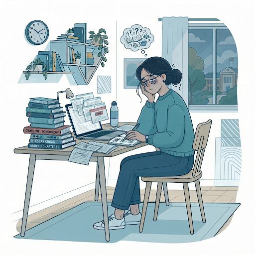
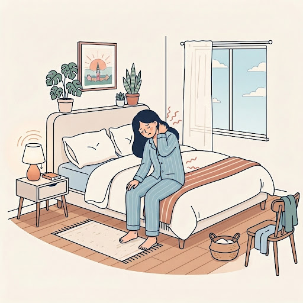

Consecuencias del Estrés Académico
El estrés académico, cuando no se maneja adecuadamente, deja de ser una respuesta pasajera y comienza a manifestarse en distintas dimensiones de la vida del estudiante. Estas consecuencias no solo repercuten en el ámbito académico, sino también en la salud física, emocional y en la vida cotidiana de quien las experimenta.

¿Cómo se Manifiesta en Tu Día a Día?
Reconocer a tiempo los síntomas cognitivos, emocionales y físicos es fundamental para prevenirlos y solicitar apoyo profesional.
Falta de concentración y fatiga intelectual
Dificultad para mantener el enfoque en las lecturas, lentitud para procesar información y saturación mental constante.
Desinterés por las tareas habituales y descuidos frecuentes
Pérdida de motivación por las actividades académicas rutinarias, olvidos y descuidos recurrentes en entregas.
Agotamiento constante y dificultad para recuperarse
Sensación profunda de cansancio sin importar el tiempo dedicado al descanso o a pausas breves.
Dificultad para levantarse por las mañanas
Pesadez al despertar, falta de energía inicial e inercia prolongada para empezar la jornada.
Descenso del rendimiento intelectual y físico
Disminución notoria en el desempeño académico, la retención de contenidos y la agilidad física.
Tristeza y síntomas depresivos
Estado de ánimo decaído, sentimientos de vacilación, desánimo prolongado y desesperanza.
Disminución del deseo sexual y dificultades en la respuesta sexual
Alteración del equilibrio hormonal y afectivo que repercute negativamente en la salud íntima.
Nerviosismo, ansiedad y angustia
Preocupación excesiva desmedida ante exámenes, opresión en el pecho y estado constante de alerta.
Impaciencia e irritabilidad ante estímulos mínimos
Reacciones de enojo o intolerancia repentina hacia compañeros, familiares o pequeñas contratiempos.
Insomnio y falta de descanso
Dificultades para conciliar el sueño, despertares nocturnos y sueño no reparador.
Molestias digestivas (acidez e indigestión)
Somatización del estrés en el sistema gastrointestinal, incluyendo acidez, gastritis y pesadez.
Dolores de cabeza frecuentes
Cefaleas tensionales provocadas por sobreesfuerzo mental, preocupación continua y falta de hidratación.
Tics y movimientos involuntarios
Espasmos parpebrales (temblor en el ojo), tensión mandíbulas (bruxismo) o inquietud motora en extremidades.
Dolores de espalda y cuello por tensión muscular
Rigidez corporal, contracturas persistentes en la zona cervical y lumbar vinculadas a malas posturas y tensión acumulada.

La Tensión Somática No Debe Normalizarse
Cuando el cuerpo manifiesta molestias físicas recurrentes como rigidez muscular, problemas de descanso e indigestión, indica que las cargas sobrepasan tu capacidad de recuperación natural.
verified Recomendación Bienestar Poli
Si experimentas 3 o más de estas manifestaciones en tu semana laboral o académica, te invitamos a revisar las estrategias de autorregulación o agendar una consulta en el Centro Médico ESPOCH.